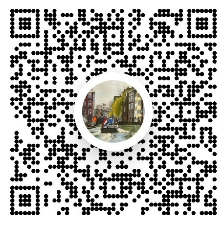

For the first ten years of my life, I lived in Amsterdam, Holland.
I emigrated with my family to the U.S. on the "Leerdam", a Dutch passenger/freight ship.
Throughout my life, I enjoyed pencil sketching and did a little painting.
Recently, in my eighties and looking for something to do in my retirement, my daughter Katrina came to the rescue with a small painting set and said to me, "Dad, you can do this."
I hope you enjoy the paintings.

If you're interested in purchasing a painting or want to know more, contact me at OpaErnest@gmail.com
or call me: (801)671-3932. You can also request custom paintings from Opa if you have a photo you'd like painted!
My Venmo: @ernestbakker
(Venmo QR code at the right)